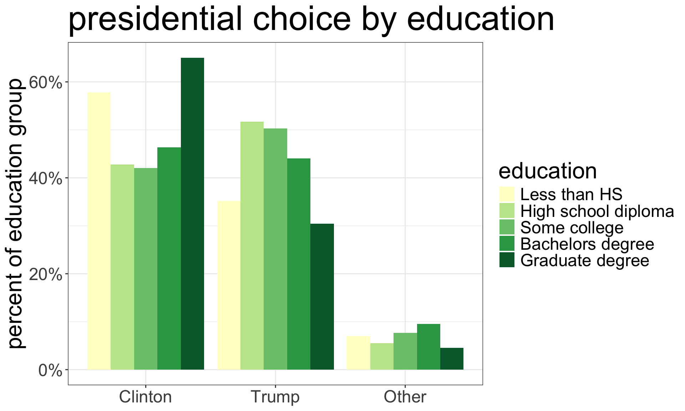
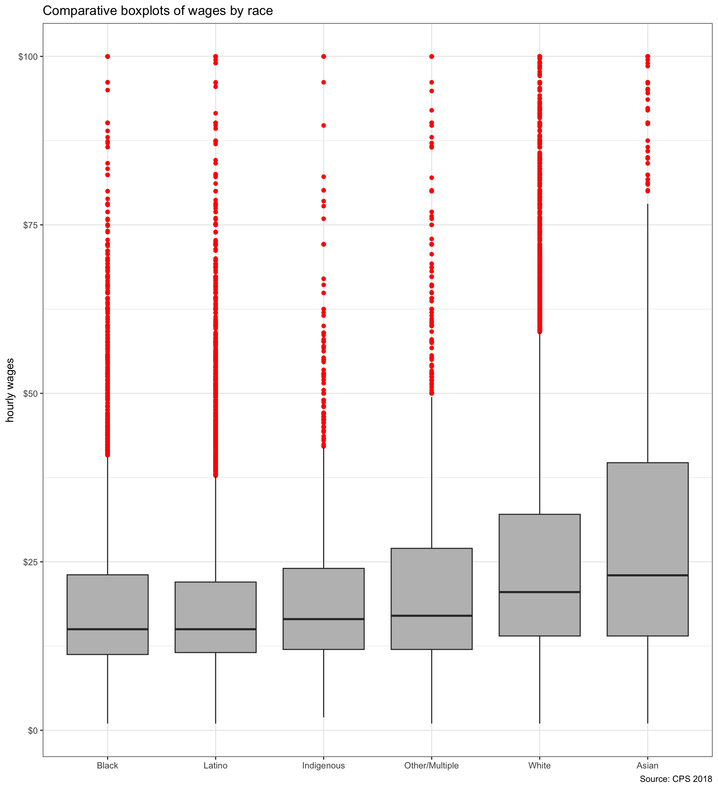

Measuring Association
Sociology 312/412/512, University of Oregon
Aaron Gullickson
Thinking about association
The primary goal of most social science statistical analysis is to establish whether there is an association between variables and to describe the strength and direction of this association.
- Is income inequality in a country related to life expectancy?
- Do stronger networks predict better success at finding jobs for job seekers?
- Does population size and growth predict environmental degradation?
- How does class affect party affiliation and voting?
Association vs. causation
We often think about the relationships we observe in data as being causally determined, but the simple measurement of association is insufficient to establish a necessary causal connection between the variables.
Spuriousness
The association between two variables could be generated because they are both related to a third variable that is actually the cause.
Reverse causality
We may think that one variable causes the other, but it is equally possible that the causal relationship is the other way.
Different methods for measuring association
Two categorical variables
The two-way table and comparative barplots
Categorical and quantitative variable
Mean differences and comparative boxplots
Two quantitative variables
The correlation coefficient and scatterplots
The Two-Way Table
The two-way table
The two-way table (or cross-tabulation) gives the joint distribution of two categorical variables.
We can create a two-way table in R using the table command but this time we feed in two different variables. Here is an example using sex and survival on the titanic:
There were 339 female survivors, 127 female deaths, and so on.
Raw numbers are never enough
| Sex | Survived | Died |
|---|---|---|
| Female | 339 | 127 |
| Male | 161 | 682 |
- It might seem like the much higher number of male deaths is enough to claim that there is a relationship between gender and survival, but this comparison would be flawed. Why?
- There were a lot more male passengers on the Titanic than female passengers. So even if they had the same probability of survival, we would expect to see more male deaths.
- We need to compare the proportion of deaths among men to the proportion of deaths among women to make a proper comparison.
- Never, ever compare raw numbers directly. Instead, we need to first calculate a conditional distribution using proportions. In this case, I want the distribution of survival conditional on gender.
Calculate maginal distributions
A first step in establishing the relationship is to calculate the marginal distributions of the row and column variables. The marginal distributions are simply the distributions of each categorical variable separately. We can calculate these from the tab object I created using the margin.table command in R:
Note that the the option 1 here gives me the row marginal and the option 2 gives me the column marginal.
Distribution of survival conditional on sex
| Sex | Survived | Died | Total |
|---|---|---|---|
| Female | 339 | 127 | 466 |
| Male | 161 | 682 | 843 |
| Total | 500 | 809 | 1309 |
To get distribution of survival by gender, divide each row by row totals:
| Sex | Survived | Died | Total |
|---|---|---|---|
| Female | 339/466 | 127/466 | 466 |
| Male | 161/843 | 682/843 | 843 |
| Sex | Survived | Died | Total |
|---|---|---|---|
| Female | 0.727 | 0.273 | 1.0 |
| Male | 0.191 | 0.809 | 1.0 |
- Read the distribution within the rows:
- 72.7% of women survived and 27.3% of women died.
- 19.1% of men survived and 80.9% of men died.
- Men were much more likely to die on the Titanic than women.
Calculating conditional distributions in R
You can use prop.table to calculate conditional distributions in R.
Survived Died
Female 0.7274678 0.2725322
Male 0.1909846 0.8090154- Take note of the
1as the second argument inprop.table. You must include this to get the distribution of the column variable conditional on the row. - Make sure that the proportions sum up to one within the rows to check yourself.
The other conditional distribution
What changed?
- Notice that the rows do not sum to one anymore. However, the columns do sum to one.
- Because of the
2in theprop.tablecommand, we are now looking at the distribution of gender conditional on survival.
Comparative barplot by faceting
Code and output for comparative barplot
The code here is identical to that for a simple barplot except for the addition of facet_wrap. The facet_wrap command allows us to make separate panels of the same graph across the categories of some other variable.
Comparative barplot by fill aesthetic
We group by sex and also add a fill aesthetic that will apply different colors by sex.
We add position="dodge" to geom_bar so that bars are drawn side-by-side rather than stacked.
We add fill="gender" to labs so that our legend has a nice title.
Presidential choice by education
# first command drops non-voters
temp <- droplevels(subset(politics,
president!="No Vote"))
tab <- table(temp$educ, temp$president)
# round and multiply prop.table by 100
# to get percents
props <- round(prop.table(tab, 1),3)*100
props
Clinton Trump Other
Less than HS 57.8 35.2 7.0
High school diploma 42.8 51.7 5.5
Some college 42.1 50.3 7.7
Bachelors degree 46.4 44.1 9.5
Graduate degree 65.0 30.4 4.5ggplot(subset(politics, president!="No Vote"),
aes(x=president, y=..prop..,
group=educ, fill=educ))+
geom_bar(position = "dodge")+
labs(title="presidential choice by education",
x=NULL,
y="percent of education group",
fill="education")+
scale_y_continuous(label=scales::percent)+
scale_fill_brewer(palette="YlGn") #<<
Super fancy three-way table
ggplot(subset(politics, president!="No Vote" &
gender!="Other"),
aes(x=president, y=..prop..,
group=educ, fill=educ))+
geom_bar(position = "dodge")+
labs(title="presidential choice by education",
x=NULL,
y="percent of education group",
fill="education")+
scale_y_continuous(label=scales::percent)+
scale_fill_brewer(palette="YlGn")+
facet_wrap(~gender)Just add a facet_wrap to see how education affected presidential voting differently for men and women.
How to compare differences in probabilities?
Survived Died
Female 72.75 27.25
Male 19.10 80.90We could look at the difference (72.75-19.1=53.65), but this can be misleading because as the overall probability approaches either 0% or 100%, the difference must get smaller.
Titanic

38% of passengers survived
Costa Concordia

Roughly 99.2% of passengers survived
Calculate the odds
The odds is the ratio of “successes” to “failures.” Convert probabilities to odds by taking \[\texttt{Odds}=\texttt{probability}/(1-\texttt{probability})\]
Women
If 72.75% of women survived, then the odds of survival for women are \[0.7275/(1-0.7272)=2.67\]
About 2.67 women survived for every woman that died.
Men
If 19.1% of men survived, then the odds of survival for men are \[0.191/(1-0.191)=0.236\]
About 0.236 men survived for every man that died. Alternatively, 0.236 is close to 0.25, so about one man survived for every four that died.
Calculate the odds ratio
Odds ratio
To determine the difference in our odds we take the odds ratio by dividing one of the odds by the other.
\[\texttt{Odds ratio}=\frac{O_1}{O_2}=\frac{2.67}{0.236}=11.31\]
The odds of surviving the Titanic were 11.31 times higher for women than for men.
Cross-product method
| Sex | Survived | Died |
|---|---|---|
| Female | 339 | 127 |
| Male | 161 | 682 |
Multiply the diagonal bolded values together and divide by the product of the reverse-diagonal italicized values to get the same odds ratio.
\[\frac{339*682}{161*127}=11.31\]
Mean Differences
Comparative boxplots
Code and output for comparative boxplot
We just need to add an x aesthetic (in this case race) to the plot to get a comparative boxplot.
In this case, I have also used the reorder command to reorder my categories so they go from smallest to largest median wage by race. This is not necessary but will add more information to the boxplot.

Income and presidential choice
Calculating mean differences
Use the tapply command to get the mean income of respondents separately by who they voted for:
Clinton Trump Other No Vote
79.40396 77.37831 80.31188 60.69635 - The first argument is the quantitative variable
- The second argument is the categorical variable
- The third argument is the function you want to run on the subsets of the quantitative variable
The mean difference is given by: \[80.23-77.33=2.9\] Clinton voters had a household income $2900 higher than Trump voters, on average.
What about median differences?
Clinton voters had median household incomes $2000 lower than Trump voters. Why are the results different between the mean and median?
The income distribution of Clinton supporters is more right-skewed than Trump supporters so it has a higher mean but lower median. However, the differences are relatively small regardless.

Scatterplot and Correlation Coefficient
Constructing a scatterplot

Constructing a scatterplot
Constructing a scatterplot
Code and output for scatterplot
What are we looking for?

- Direction
- Is the relationship positive (y is high when x is high) or negative (y is low when x is high)?
- Linearity
- Does the relationship look linear or does it “curve?”
- Strength
- Do points fall in a broad cloud or a tight line?
- Outliers
- Are there outliers and are they inconsistent with the general trend?
Overplotting with discrete variables
Overplotting corrections
geom_jitterinstead ofgeom_pointwill add some randomness to x and y values so that points are not plotted on top of each other. Thewidthandheightarguments can be adjusted for more or less randomness (scale 0-1).- The
alphaargument will create semi-transparent points (scale 0-1). I have it set very low because of the large number of points, but you should adjust as needed.
Adding a third variable by color
I just add a third aesthetic to the aes command for color. This will color the points by the category of the variable used (in this case, gender).
I am using the viridis color scheme here, but you can adjust the palette if you like.

The correlation coefficient
The correlation coefficient (\(r\)) measures the association between two quantitative variables. The formula is:
\[r=\frac{1}{n-1}\sum^n_{i=1} (\frac{x_i-\bar{x}}{s_x}*\frac{y_i-\bar{y}}{s_y})\]
Let’s break it down
\((x_i-\bar{x})\) and \((y_i-\bar{y})\): Subtract the mean from each value of x and y to get distance above and below mean.
Evidence of positive or negative relationship
The correlation coefficient
\((\frac{x_i-\bar{x}}{s_x}*\frac{y_i-\bar{y}}{s_y})\): Multiply x and y values together. The results provides evidence of negative or positive relationship.
\(\sum^n_{i=1} (\frac{x_i-\bar{x}}{s_x}*\frac{y_i-\bar{y}}{s_y})\): Sum up all the evidence, positive and negative.
\(\frac{1}{n-1}\sum^n_{i=1} (\frac{x_i-\bar{x}}{s_x}*\frac{y_i-\bar{y}}{s_y})\): Divide result by sample size to get final correlation coefficient.
What does the correlation coefficient mean?
- Direction
- The sign of \(r\) indicates the direction of the relationship. Positive values indicate a positive relationship and negative values indicate a negative relationship. Zero indicates no relationship.
- 💪 Strength
- The absolute value of \(r\) indicates the strength of the relationship. The maximum value of \(r\) is 1 and the minimum value is -1. You only reach these values if the points fall exactly on a straight line.
- ⚠️ Limitations
- \(r\) is only applicable for linear relationships and \(r\) can be severely affected by outliers.
Simulated examples of correlation strength
Sociology 312/412/512, University of Oregon